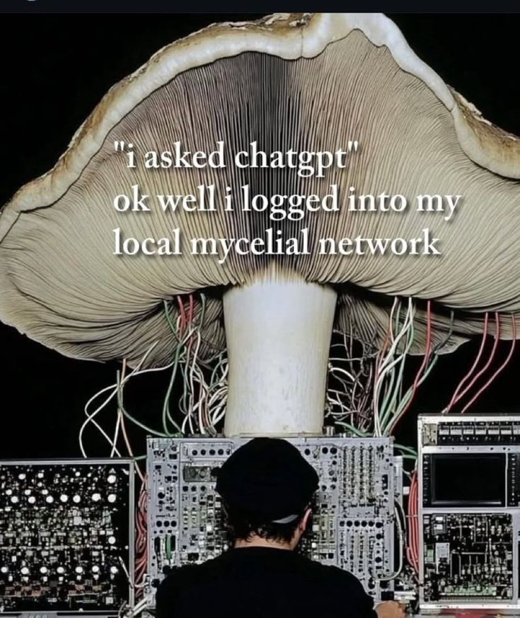

wednesday, october 22nd
9:51pm
quote of the day is: “you have the pinterest of a fucking wizard”
feeling: tired.
i have a plant biology midterm on friday which is so cool and fun and real and important, and i have actually been studying for it everyday
since last friday, but i’m feeling burnt out by it, and i’m not quite satisfied with how much i know yet. there
are one billion terms in botany to know, go figure. but it’s still a lot ok! and there’s nothing i hate more than sitting down for hours,
for days in a row, just memorizing things. it drive me nuts (or should i say fruits, because erm technically nuts are a type of dry indehiscent
fruit hahaahahhah. plants….)
also, i remember when we were learning about nuts a few weeks ago, my prof mentioned how cashews come from a fruit, and i immediately was
transported back in time to this video. does anyone else remember this? buh.
and lowkey i be feeling so behind now that midterms are happening, because at the start of the term i was making flashcards after every class
AND doing every reading AND staying on top of math practice problems, but i fear that has all slipped away.
what am i supposed to do? stay up until 3am doing it all? frick no.
anyways, i’m lowkey getting worked up but it’s also 10pm which means it’s nighttime, and my mummy always says to “never believe anything about
your life past 9pm” and that’s something to truly live by. i know i’ll feel better after some sleep. gah.
i wanna add an about me section to my magical bog, but that’s a work in progress, so for now, here are some of my current interests:
-pins
-wildlife (especially birds and fish, but rlly anything at all, every critter ever!)
-yerba mate, but lately as hot tea in the mornings
-my bike
-how trees talk to each other thru the internet hidden in the soil (aka mycelium networks)
-racoon tails
i wrote all of that and realize that i’m choosing the things that will sound the coolest to the person on the other side of the screen (hello you).
these are all true things, but let me list some more “ugly” interests:
-figuring out wtf to eat so i’m not hungry 24/7
-what are some good snacks to bring to school so i’m not completely delirious during class
-on second thought, these are more like thoughts instead of interests, lol.
i’ll stop there lol. i should go to bed after i post this. the plan for tomorrow is to wake up early, study, bike to my ecology lab, bike home, maybe
nap, study some more, and then get in some spooky attire and go to koerners to see wishbone asf.
goodnight gremlins of the night.

tuesday, october 21st
10:53am
this morning i woke up early just to finally clean my gnome home. i’ve been so very busy with studying for midterms, it’s as though the
“grind never stops” or something. me when i transfer into sciences and i’m surprised that there is more studying to do Ö !!
so i don’t have class until 12 today, which means tuesday’s i usually sleep in, but i got up at 8:30am to dust, vacuum, take out the trash, and
start a load of laundry. oh, and i decided it’s about time i washed my sheets, so i’m currently laying on my naked bed.
dude yesterday i fully forgor my bike at school, and i’m absolutely praying she’s still there. i’ll update you guys on whether or not she was
kidnapped over night. would be devastating…
i feel as though i have so much to do, but not enough time. or, i do have enough time but i’m simply not a machine; i am in fact a sack of
flesh and bones that needs her rest.
i think i wanna try and add a gallery section on my site, which i was planning on doing anyways, but i need many hours to be able to sit down and
do so, which i don’t have the time for right now! i must study plants and calculate math equations instead. i’ll do it at some point, so keep your peepers peeled.
alright i must go get dressed, eat, and (hopefully) retrieve my bike before my tree lab :p
so long and farewell.
11:48am
bike was found! hooray!!!
friday, october 17th
11:46am
hello internet surfers. i think i finally figured out how to use github and deploy my site to neocities. damn that was a lot.
now i can blog, and blog, and blog!!!! stay tuned for more more more :P c:
check out this lil graphic i made: